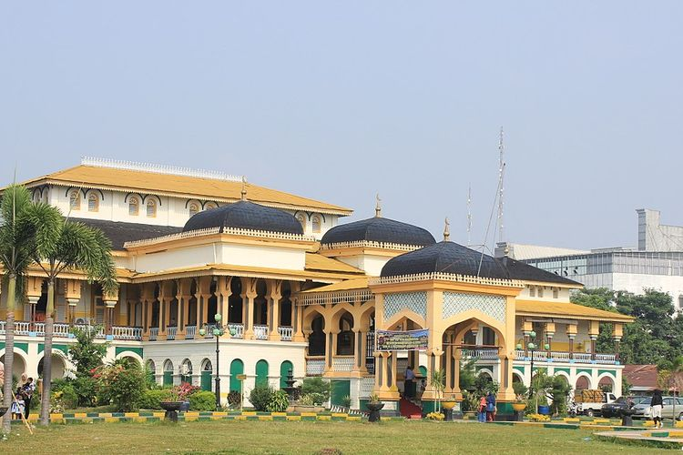
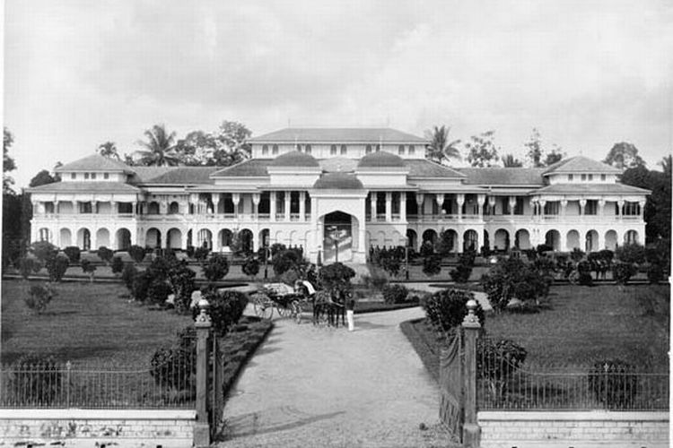

Istana Maimun

Istana Maimun merupakan bangunan peninggalan kerajaan Deli.

Istana Maimun yang menjadi salah satu bukti kejayaan Kesultanan Deli.
Istana Maimun menjadi salah satu destinasi wisata sejarah di Kota Medan.
Istana Maimun masih berfungsi sebagai tempat upacara adat Kerajaan Deli.